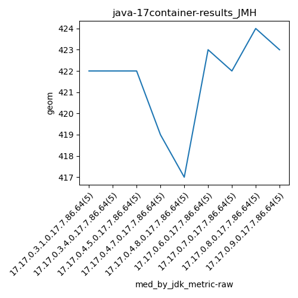
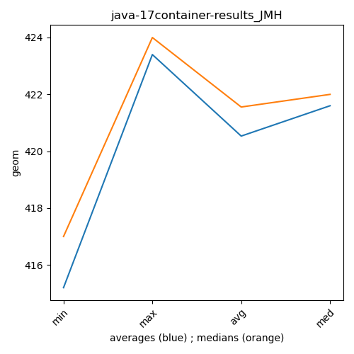

java-17 JMH
Context at bottom
/home/jvanek/git/benchmarks-in-nested-virtualisation-toolchain/final_results/container_results/container-results_J2DBENCH
java-17
JMH
/home/jvanek/git/benchmarks-in-nested-virtualisation-toolchain/final_results/container_results/container-results_RADARGUNs3
java-17
JMH
/home/jvanek/git/benchmarks-in-nested-virtualisation-toolchain/final_results/container_results/container-results_RADARGUNs1
java-17
JMH
/home/jvanek/git/benchmarks-in-nested-virtualisation-toolchain/final_results/container_results/container-results_DACAPO
java-17
JMH
/home/jvanek/git/benchmarks-in-nested-virtualisation-toolchain/final_results/container_results/container-results_SPECJBB
java-17
JMH
/home/jvanek/git/benchmarks-in-nested-virtualisation-toolchain/final_results/container_results/container-results_JMH
java-17
JMH
container-results_JMH
final score
Expected number of java-17 JDKs: 9
1st avgmed_alljdks_metric:
/home/jvanek/git/benchmarks-in-nested-virtualisation-toolchain/final_results/result_processing.py /home/jvanek/git/benchmarks-in-nested-virtualisation-toolchain/final_results/container_results/container-results_JMH geom False
values: [418, 423, 421, 422, 426, 407, 423, 423, 422, 422, 408, 422, 422, 422, 423, 409, 418, 419, 420, 420, 405, 417, 417, 418, 419, 422, 423, 424, 423, 425, 423, 422, 423, 422, 418, 424, 422, 421, 425, 424, 425, 423, 422, 423, 424]

Expected number of iterations: 5
final number of values: 45 out of 45
Pass rate: 100.0%
values: (405, 426, 420.53333333333336, 422)

** accuracy from all jdks and runs
more is better
MIN: 405
MAX: 426
AVG: 420.53333333333336
MED: 422
Relative differences 1:
MIN-MAX: 5.0 %
MIN-AVG: 4.0 %
MIN-MED: 4.0 %
MAX-MIN: -5.0 %
MAX-AVG: -1.0 %
MAX-MED: -1.0 %
AVG-MED: 0.0 %
stored to java-17.properties. sort | uniq that!
2nd avgmed_by_jdk_metric:
values: [422.0, 419.4, 419.4, 417.2, 415.2, 423.4, 421.6, 423.2, 423.4]

values: [422, 422, 422, 419, 417, 423, 422, 424, 423]

values: (415.2, 423.4, 420.5333333333333, 421.6)
values: (417, 424, 421.55555555555554, 422)

** accuracy from all jdks where runs were avged
more is better
MIN: 415.2
MAX: 423.4
AVG: 420.5333333333333
MED: 421.6
Relative differences 1:
MIN-MAX: 2.0 %
MIN-AVG: 1.0 %
MIN-MED: 2.0 %
MAX-MIN: -2.0 %
MAX-AVG: -1.0 %
MAX-MED: -0.0 %
AVG-MED: 0.0 %
stored to java-17.properties. sort | uniq that!
** accuracy from all jdks where runs were medianed
more is better
MIN: 417
MAX: 424
AVG: 421.55555555555554
MED: 422
Relative differences 1:
MIN-MAX: 2.0 %
MIN-AVG: 1.0 %
MIN-MED: 1.0 %
MAX-MIN: -2.0 %
MAX-AVG: -1.0 %
MAX-MED: -0.0 %
AVG-MED: 0.0 %
stored to java-17.properties. sort | uniq that!
pass rates:
container-results_JMH=100.0%
Context:
- container_results
- JMH